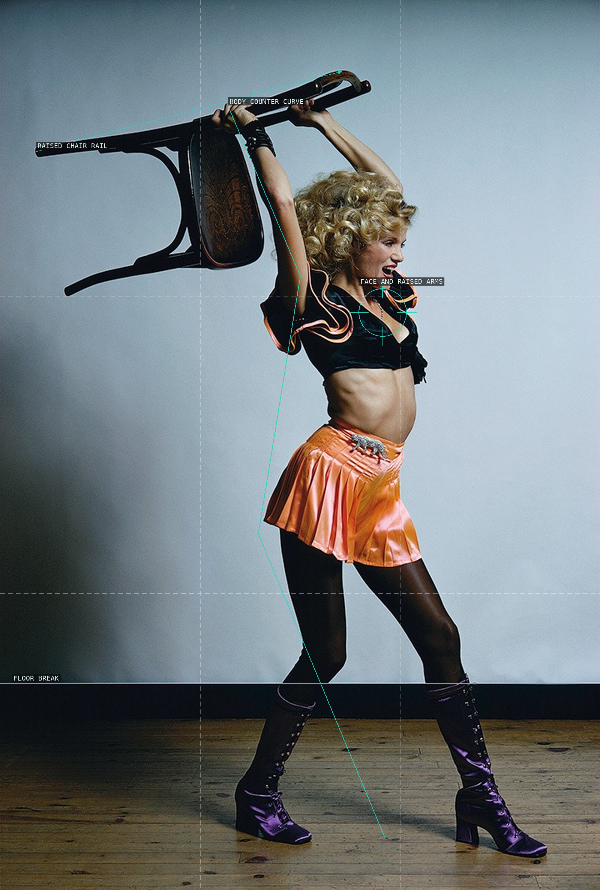
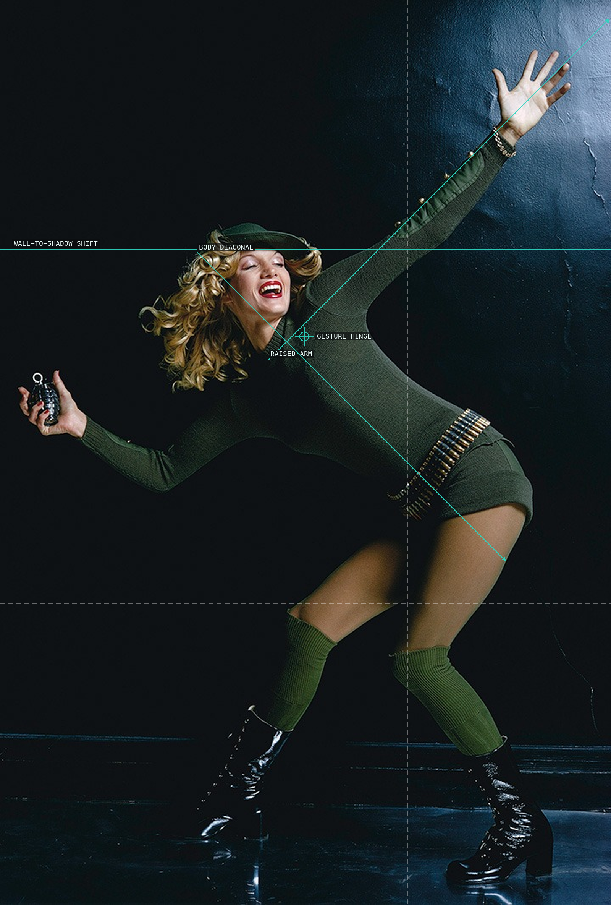
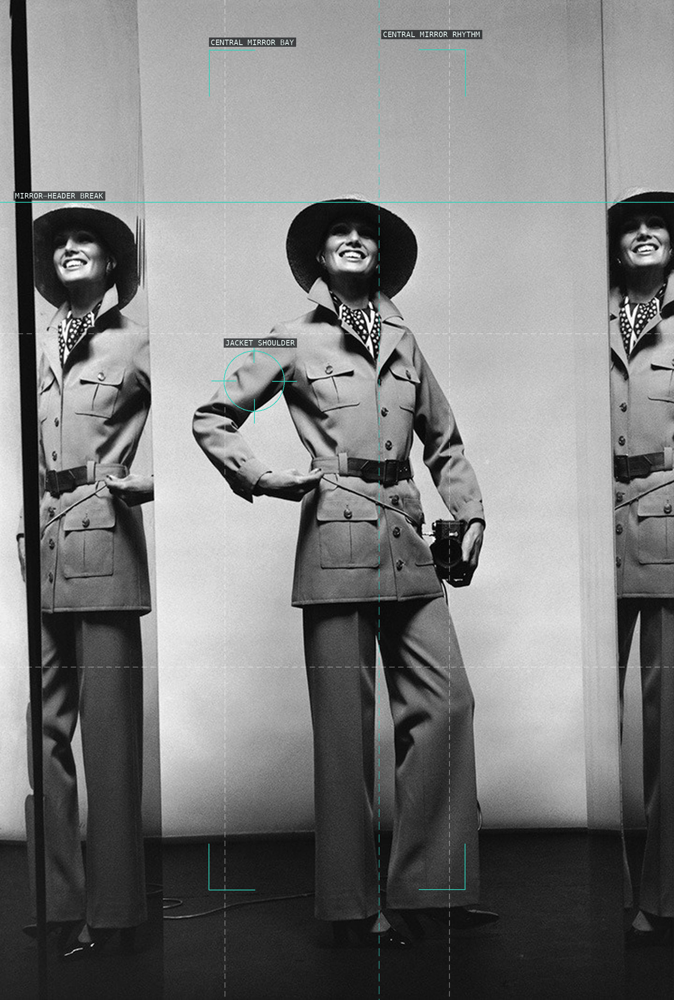
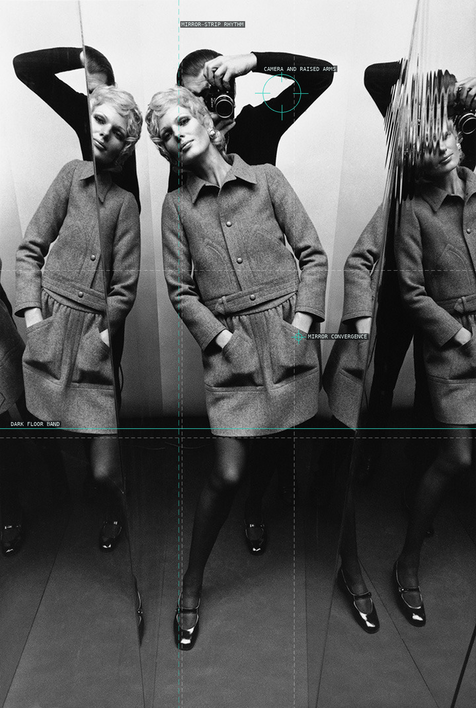
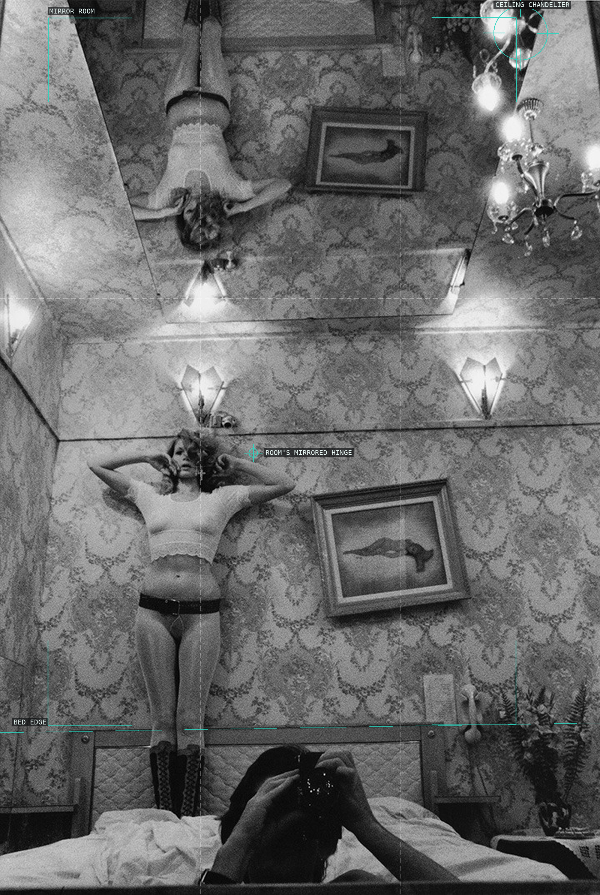
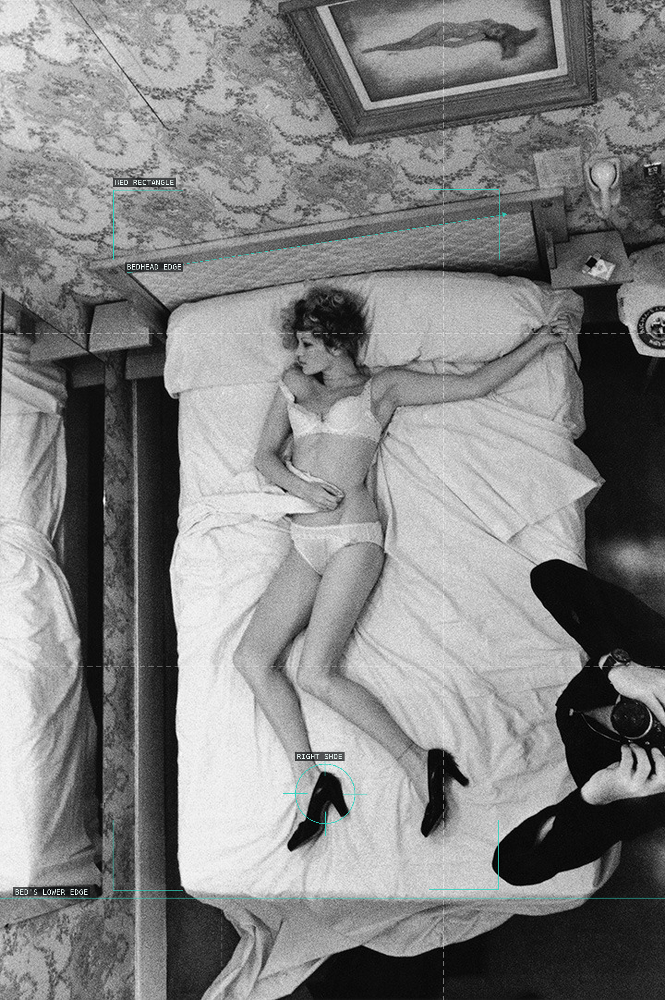
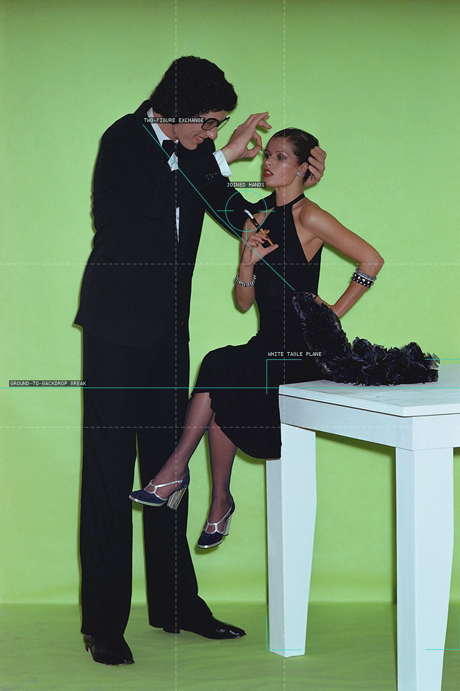
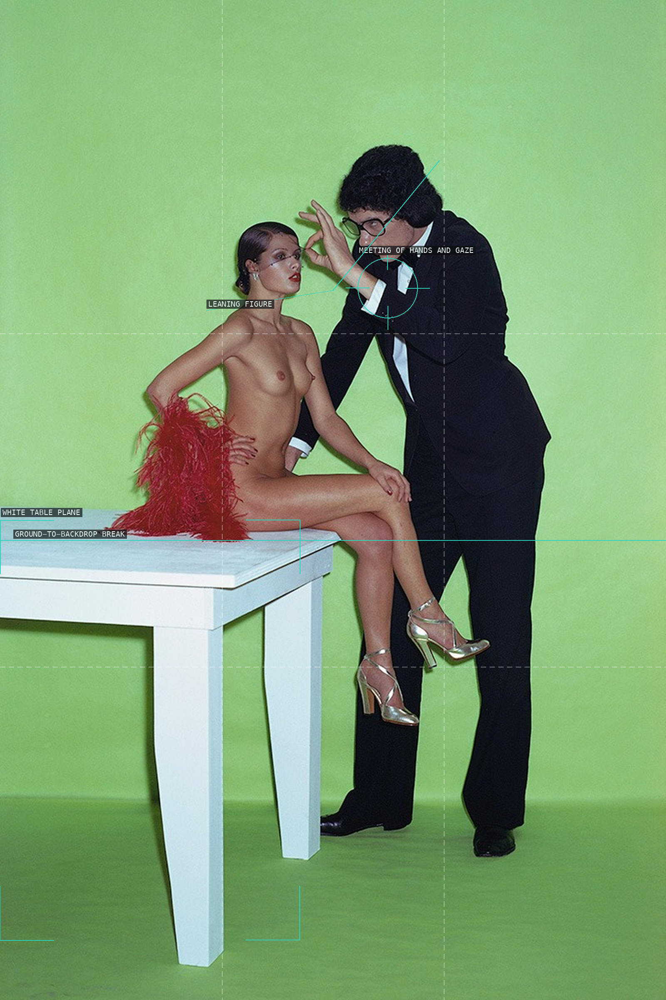
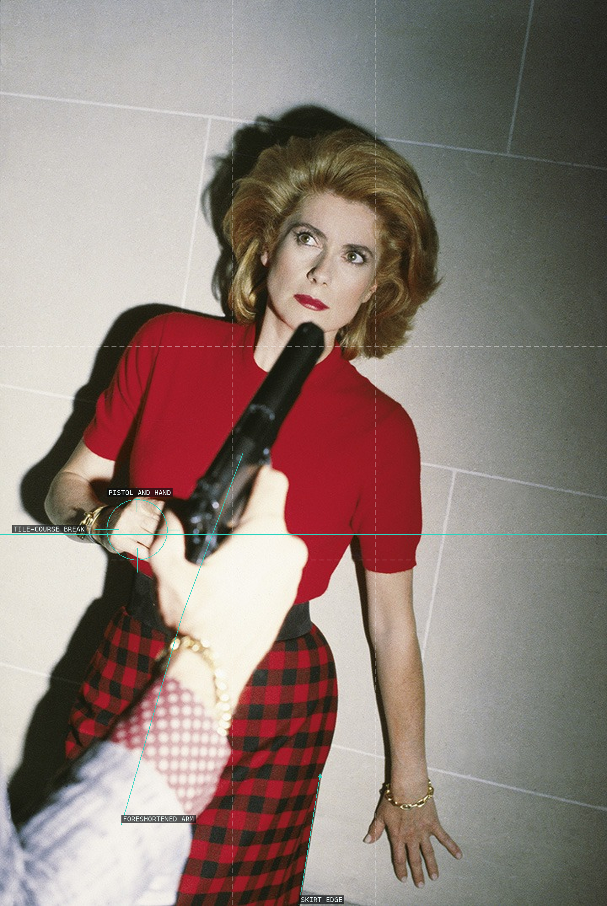
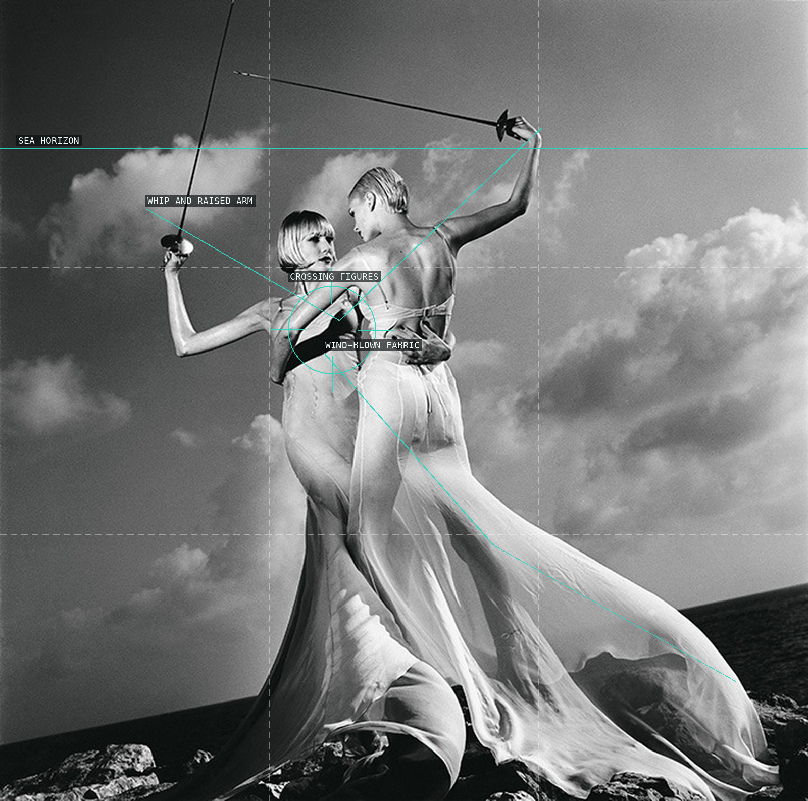

Helmut Newton — overlay proofs

01 — Nova (1971), chair tableau

02 — Nova (1971), green figure

03 — Elle (1969), mirrored uniform

04 — Elle (1969), mirror recursion
 05 — Nova (1973), seated masked smoker
05 — Nova (1973), seated masked smoker
 06 — Nova (1973), paired figures
06 — Nova (1973), paired figures

07 — Nova (1971), hotel-room mirror scene

08 — Nova (1971), overhead bed scene

09 — Marie Claire (1973), table tableau

10 — Marie Claire (1973), red feather and table

11 — Catherine Deneuve (1983)

12 — US Vogue, Monaco (1996)